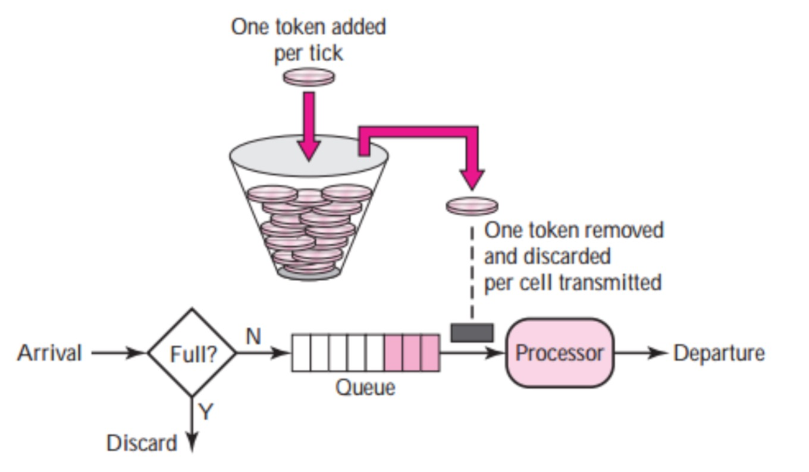

速率限制
EMQ X 提供对接入速度、消息速度的限制：当客户端连接请求速度超过指定限制的时候，暂停新连接的建立；当消息接收速度超过指定限制的时候，暂停接收消息。
速率限制是一种 backpressure 方案，从入口处避免了系统过载，保证了系统的稳定和可预测的吞吐。速率限制可在 etc/emqx.conf 中配置：
| 配置项 | 类型 | 默认值 | 描述 |
|---|---|---|---|
| listener.tcp.external.max_conn_rate | Number | 1000 | 本节点上允许的最大连接速率 (conn/s) |
| zone.external.publish_limit | Number,Duration | 无限制 | 单连接上允许的最大发布速率 (msg/s) |
| listener.tcp.external.rate_limit | Size,Duration | 无限制 | 单连接上允许的最大报文速率 (bytes/s) |
- max_conn_rate 是单个 emqx 节点上连接建立的速度限制。
1000代表秒最多允许 1000 个客户端接入。 - publish_limit 是单个连接上接收 PUBLISH 报文的速率限制。
100,10s代表每个连接上允许收到的最大 PUBLISH 消息速率是每 10 秒 100 个。 - rate_limit 是单个连接上接收 TCP数据包的速率限制。
100KB,10s代表每个连接上允许收到的最大 TCP 报文速率是每 10 秒 100KB。
publish_limit 和 rate_limit 提供的都是针对单个连接的限制，EMQ X 目前没有提供全局的消息速率限制。
速率限制原理
EMQ X 使⽤令牌桶 (Token Bucket) 算法来对所有的 Rate Limit 来做控制。 令牌桶算法 的逻辑如下图:

- 存在一个可容纳令牌(Token) 的最大值 burst 的桶(Bucket)，最大值 burst 简记为 b 。
- 存在一个 rate 为每秒向桶添加令牌的速率，简记为 r 。当桶满时则不不再向桶中加⼊入令牌。
- 每当有 1 个(或 N 个)请求抵达时，则从桶中拿出 1 个 (或 N 个) 令牌。如果令牌不不够则阻塞，等待令牌的⽣生成。
由此可知该算法中:
长期来看，所限制的请求速率的平均值等于 rate 的值。
记实际请求达到速度为 M，且 M > r，那么，实际运⾏中能达到的最大(峰值)速率为 M = b + r，证明：
容易想到，最大速率 M 为：能在1个单位时间内消耗完满状态令牌桶的速度。而桶中令牌的消耗速度为 M - r，故可知：b / (M - r) = 1，得 M = b + r
令牌桶算法在 EMQ X 中的应用
当使用如下配置做报文速率限制的时候：
listener.tcp.external.rate_limit = 100KB,10s
EMQ X 将使用两个值初始化每个连接的 rate-limit 处理器：
- rate = 100 KB / 10s = 10240 B/s
- burst = 100 KB = 102400 B
根据 消息速率限制原理 中的算法，可知：
- 长期来看允许的平均速率限制为 10240 B/s
- 允许的峰值速率为 102400 + 10240 = 112640 B/s
为提高系统吞吐，EMQ X 的接入模块不会一条一条的从 socket 读取报文，而是每次从 socket 读取 N 条报文。rate-limit 检查的时机就是在收到这 N 条报文之后，准备继续收取下个 N 条报文之前。故实际的限制速率不会如算法一样精准。EMQ X 只提供了一个大概的速率限制。N 的值可以在 etc/emqx.conf 中配置：
| 配置项 | 类型 | 默认值 | 描述 |
|---|---|---|---|
| listener.tcp.external.active_n | Number | 100 | emqx 每次从 TCP 栈读取多少条消息 |